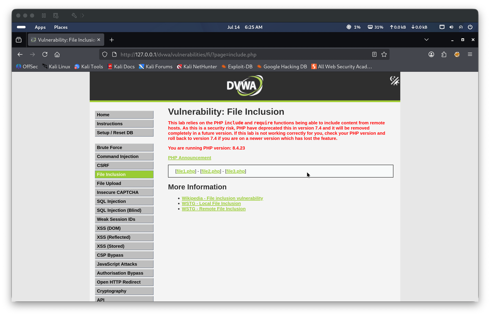
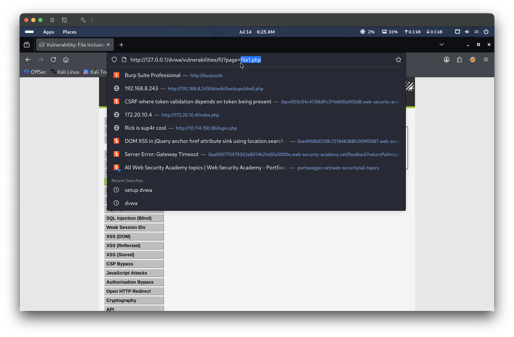
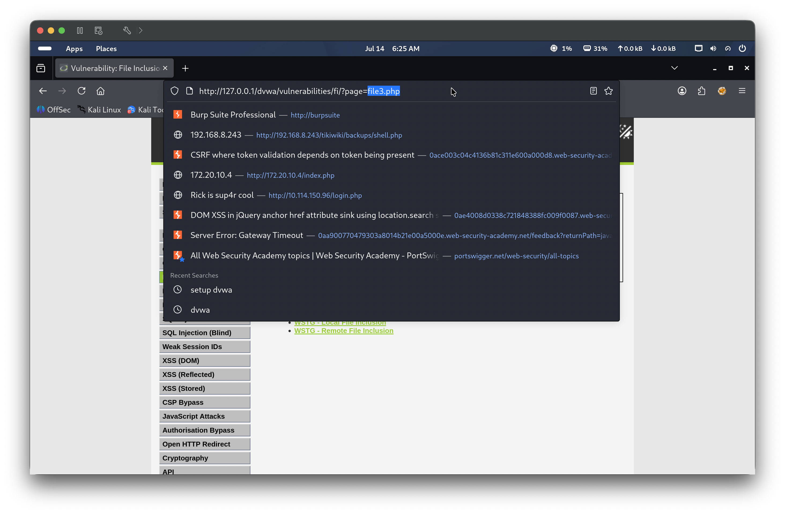
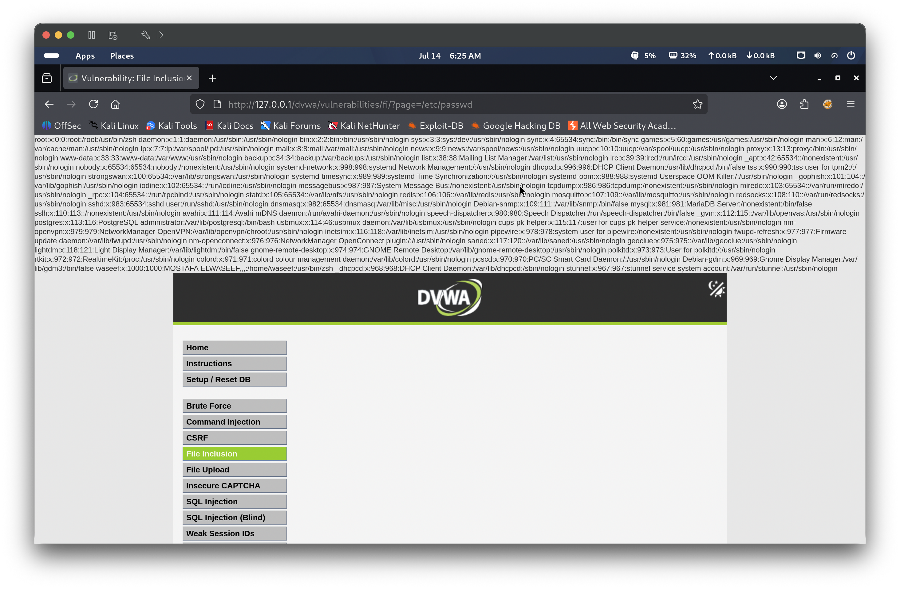

Identify how the File Inclusion lab loads content at Medium security and determine whether the page parameter still accepts arbitrary user input despite added filtering.
Findings
The File Inclusion lab page at Medium security presented the same three links — file1.php, file2.php, and file3.php. Clicking through each link confirmed that the page GET parameter continued to change with every selection, cycling through ?page=file1.php, ?page=file2.php, and ?page=file3.php. This indicated the parameter still controls server-side file inclusion, suggesting that any filtering applied at this level may not cover all input vectors.
PoC: - Tools used: Browser - Commands: Observed URL changing to ?page=file1.php, ?page=file2.php, ?page=file3.php by clicking each link - Result: page parameter confirmed to still control server-side file inclusion at Medium security



Exploitation — Local File Inclusion (LFI) via Absolute Path
Description
At Medium security, DVWA applies basic filtering using str_replace() to strip ../ sequences and http:// from the page parameter. This blocks relative path traversal and Remote File Inclusion, but does not prevent absolute path inclusion. Supplying a full absolute path to a sensitive file bypasses the filter entirely, as the server passes the value directly to include() with no further validation.
PoC — Steps to Reproduce
With the page parameter identified as the inclusion vector, replace its value with an absolute path to a sensitive system file, bypassing the ../ filter entirely: ?page=/etc/passwd
The server’s str_replace() filter finds nothing to strip in an absolute path and passes the value directly to include(), rendering the full contents of /etc/passwd in the browser

Lessons Learned
At Medium security, DVWA strips ../ and http:// from input, which blocks naive path traversal and RFI attempts. However, absolute paths are not filtered, meaning any file readable by the web server process remains accessible. Effective mitigation requires a whitelist approach — explicitly allowing only the expected filenames (file1.php, file2.php, file3.php) rather than attempting to blacklist dangerous patterns.